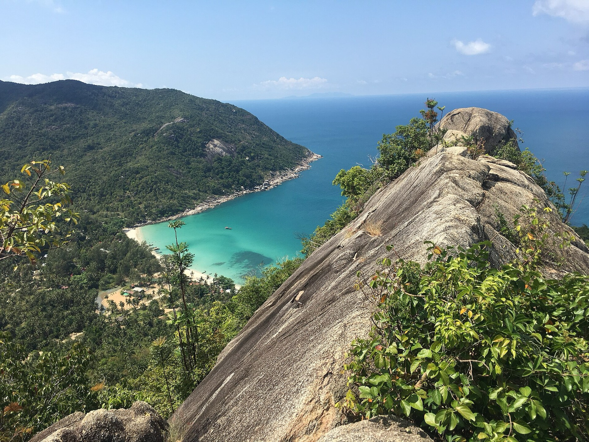

The north of Koh Phangan has the island's quietest, clearest beaches, from a working fishing bay to a sandbar you can walk to a marine park. Here are the ones worth your day.
The south of the island gets the crowds. The north keeps the calm water and the white sand. Most of these beaches are a short drive or boat ride from Chaloklum, and the best swimming and visibility runs roughly November to April.
Chaloklum Bay
A long, sheltered north-coast bay and a genuine fishing village. The water is shallow and calm, the white-coral north end is good for children, and the pace is about as far from the party scene as the island gets. It is also the pier for Bottle Beach taxi boats and Sail Rock dive trips.
Haad Khom (Coral Bay)
A small, secluded bay just west of Chaloklum, and one of the north's best shore-snorkelling spots, with reef close to the sand and good visibility on calm days. Quiet, with only a handful of low-key bungalows and bars. A short, steepish drive from Chaloklum.
Mae Haad & the Koh Ma sandbar
On the northwest corner, a natural sandbar emerges at low tide and lets you walk out to the little island of Koh Ma, the island's only marine park. The fringing reef here is some of the best shore snorkelling on Koh Phangan. Relaxed and family-friendly.

Bottle Beach (Haad Khuat)
The island's postcard: a remote white-sand cove backed by jungle, with clear water and snorkelling at the rocky ends. There is no road, which is exactly why it stays pristine. Reach it by longtail taxi boat from Chaloklum (around 20 to 30 minutes) or hike the coastal trail from near Haad Khom.
Haad Salad & Haad Yao
Heading down the west coast, two more worth the drive:
- Haad Salad: a gently curved white-sand beach with a vibrant reef about 80 to 100 metres offshore, one of the island's strongest shore-snorkelling spots. Laid-back and sociable, not a party beach.
- Haad Yao (Long Beach): a long arc of sand with calm main-season water, a reef just offshore and front-row sunsets. The most developed of this group, with beachfront restaurants and easy access.
Locations & coordinates
Every beach here is a short drive or boat ride from Gaia Residence, above Chaloklum Bay. Exact pins for the map:
| Beach | Coast | Map |
|---|---|---|
| Chaloklum Bay | North | Open ↗ |
| Haad Khom (Coral Bay) | North | Open ↗ |
| Mae Haad | Northwest | Open ↗ |
| Koh Ma | Off Mae Haad | Open ↗ |
| Bottle Beach (Haad Khuat) | North | Open ↗ |
| Haad Salad | West | Open ↗ |
| Haad Yao (Long Beach) | West | Open ↗ |
Frequently asked questions
What is the best beach in north Koh Phangan?
Bottle Beach is the most famous, reached only by boat or hike. For everyday swimming, Chaloklum Bay and Mae Haad are calm and family-friendly.
Which beach is best for snorkelling?
Mae Haad, via the Koh Ma sandbar, and Haad Khom (Coral Bay) near Chaloklum, where the reef is close to shore. Haad Salad also has a good offshore reef.
When is the best time for the beaches?
The calmest, clearest water is roughly November to April. The late-year monsoon brings rougher seas and lower visibility.
Two minutes from Chaloklum Bay. See why we chose this coast. The Gaia team.